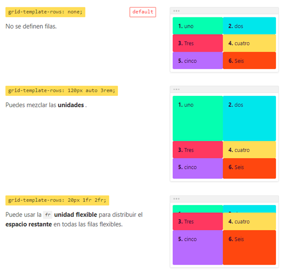

grid-template-rows
Define las filas de un grid container . Puede especificar el ancho de una
fila usando una palabra clave (como auto) o una longitud (como 10px). El
número de filas está determinado por el número de valores definidos en la
lista separada por espacios.
ACEPTA CUALQUIER TIPO DE UNIDAD DE MEDIDA: CM,%,PX,REM,FR
<>
grid-template-rows: repeat( 6, 16% ); /Se usa repeat para formar varias
columnas (el primer valor es la cantidad de filas, el segundo valor es
el tamaño de las filas)
Tambien se puede usar el repeat con 3 valores (el primer valor es la
cantidad de filas, el segundo y el tercer valor es el tamaño de las
filas) en este caso el resultado seria de forma intercalada
EJEMPLO:
grid-template-rows: repeat( 3, 16% 1fr) DE ESTA FORMA EL RESULTADO
SERIA INTERCALADO, 3 filas DE 16% Y 3 filas DE 1FR
Tambien hay una unidad de llamada FR
y sirve para dividir el espacio disponible en fracciones
